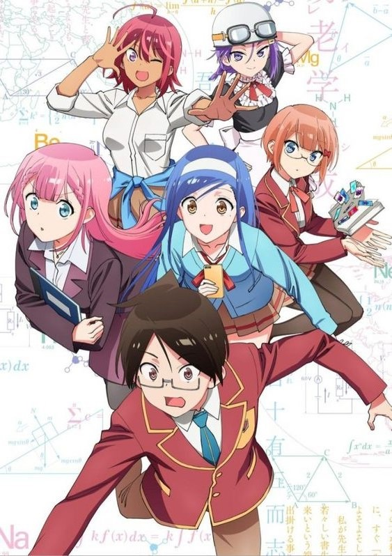

Olá, hoje irei escrever sobre minhas impressões a respeito do anime Bokutachi wa Benkyou ga Dekinai e já adianto: realmente é um anime fantástico.
Não pretendo apresentar os personagem de uma forma detalhada, talvez nem chegue a falar deles mas sim da história como um todo para evitar ao máximo dar spoilers sobre o anime.
Gostei bastante do anime mesmo com seus deslizes ao decorrer do enredo. Achei os momentos de comédia e as enrascadas do Yuiga (o protagonista) muito engraçadas, sem falar dos momentos de romance .
Bokutachi wa Benkyou ga Dekinai faz com que nos apeguemos facilmente a alguma menina que conviva com o Yuiga e faça parte da história. No caso, ele é tutor das duas primeiras que você conhecerá na primeira temporada do anime: Ogata e Furuhashi.
Depois que terminei assisti o anime, fui dar uma lida no mangá. Fiquei bem triste porque o anime, mesmo em suas duas temporadas, não dá o desenrolar que imaginei que teria. Basicamente, o enredo deixa alguns pontos essenciais sem explicação ou sem conclusão (digo no anime). Por enquanto entenda o seguinte: é um bom anime sobre o dia a dia comum de alguns personagens, porém se você quiser mais respostas enquanto não sai a próxima temporada (se sair) vai ter que ler o mangá
Como a história é contada em partes e cada parte geralmente foca em uma personagem diferente junto com o protagonista, chega a ser meio difícil decidir de forma permanente a personagem que você shippa com Yuiga. Sério, a cada episódio ou capítulo é uma nova perspectiva, um novo problema ou caso para o protagonista e uma nova surpresa. Você já deve ter notado até aqui que essa é uma série episódica que vale muito a pena acompanhar.
No momento em que escrevo esse artigo o anime conta com 13 episódios na primeira e 13 episódios na segunda temporada, com uma OVA disponível e o mangá chega a 187 capítulos no site que acompanho.
Não acho que tenho uma personagem favorita, porém gosto muito da professora e da garota de cabelo roxo, a sempai do Yuiga. Também tem a amiga de infância dele (sim, um harém de respeito)! Se o Yuiga ficar com uma das 5 ou com todas, pra mim é vantagem (não ganho mas também não perco), o que vale é a emoção de cada capítulo. Gostaria de lembrar também que o anime foi um resumo muito resumido do mangá. O anime cortou muita história que acontece no mangá. Sugiro que leia o mangá para descobrir quanto conteúdo foi deixado de fora no anime. Para se ter uma ideia, foram cortados fatos, pedaços da história de episódios do anime e até personagens (repito: personagens)!
Concluindo, Bokutachi wa Benkyou ga Dekinai é um dos melhores animes que já vi do gênero romance, harém e comédia (com alguns fanservices). Não são todas as obras que vejo que me intrigam a ponto de me fazerem correr a passos largos para o mangá (sou um pouco chato às vezes), então, de 0 a 10, para esse anime minha nota é de 10 (comigo não tem meio termo, ou a nota é dez ou é zero, raramente nove. A gente se vê na próxima.